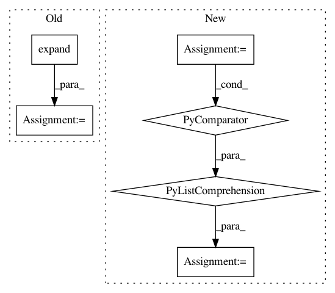

faf3aa876462323f2fa721ebd633752d6489808f,sru/modules.py,SRU,forward,#SRU#Any#Any#Any#,536
Before Change
input, batch_sizes, sorted_indices, unsorted_indices = input
length = input.size(0)
batch_size = input.size(1)
mask_pad = torch.arange(batch_size,
device=batch_sizes.device).expand(length, batch_size)
mask_pad = (mask_pad >= batch_sizes.view(length, 1)).contiguous()
else:
length = input.size(0)
batch_size = input.size(1)
batch_sizes = None
After Change
if isinstance(orig_input, PackedSequence):
input, lengths = nn.utils.rnn.pad_packed_sequence(input)
max_length = lengths.max().item()
mask_pad = torch.ByteTensor([[0] * l + [1] * (max_length - l) for l in lengths.tolist()])
mask_pad = mask_pad.to(input.device).transpose(0, 1).contiguous()
// The dimensions of `input` should be: `(sequence_length, batch_size, input_size)`.
if input.dim() != 3:
raise ValueError("There must be 3 dimensions for (length, batch_size, input_size)")
In pattern: SUPERPATTERN
Frequency: 3
Non-data size: 6
Instances
Project Name: asappresearch/sru
Commit Name: faf3aa876462323f2fa721ebd633752d6489808f
Time: 2020-09-18
Author: taolei@csail.mit.edu
File Name: sru/modules.py
Class Name: SRU
Method Name: forward
Project Name: cornellius-gp/gpytorch
Commit Name: cea478600970228f6b8dd12b067facde3d5d261f
Time: 2019-05-08
Author: balandat@fb.com
File Name: gpytorch/models/exact_gp.py
Class Name: ExactGP
Method Name: get_fantasy_model
Project Name: cornellius-gp/gpytorch
Commit Name: 7570ee1d758c93dd4054009fc12be6cc31b54031
Time: 2018-11-25
Author: gpleiss@gmail.com
File Name: gpytorch/lazy/interpolated_lazy_tensor.py
Class Name: InterpolatedLazyTensor
Method Name: _get_indices